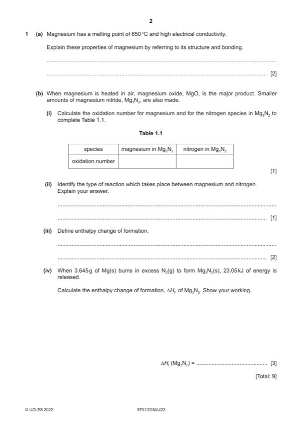

Question 1

Original paper page 2
Part 1(a) — solution
Answer: OR · OR
- [M1] comment explaining high melting point of Mg in terms of 2
- [M2] comment explaining electrical conductivity of Mg in terms of movement of delocalised electrons
Mark points
- [M1] comment explaining high melting point of Mg in terms of 2
- [M2] comment explaining electrical conductivity of Mg in terms of movement of delocalised electrons
Part 1(b)(i) — solution
Answer: 1
1
species magnesium in Mg3N2 nitrogen in Mg3N2
oxidation number 2(+) / (+)II 3– / –III
Mark points
- Correct result: 1
Part 1(b)(ii) — solution
- redox 1
- Mg loses electrons / Mg increases ox no / Mg is oxidised
- N gains electrons / N reduces ox no / N is reduced
Mark points
- redox 1
- Mg loses electrons / Mg increases ox no / Mg is oxidised
- N gains electrons / N reduces ox no / N is reduced
Part 1(b)(iii) — solution
- [M1] (enthalpy change / energy change) when one mole of a compound / substance is formed 2
- [M2] from its elements in their standard states
Mark points
- [M1] (enthalpy change / energy change) when one mole of a compound / substance is formed 2
- [M2] from its elements in their standard states
Part 1(b)(iv) — solution
Answer: OR 23 050 M1 OR 23 050 Mg3N2
- [M1] correct method to find amount Mg3N2 formed in reaction 3
- [M2] use M1 in correct expression to find energy released by 1 mol Mg3N2
- [M1] OR 23.05 mol Mg3N2
- [M1] OR 23 050 Mg3N2
- [M3] calculate value from M2 expression correctly
- [M2] ) = –461(.0) kJ mol–1 OR –461 000 J mol–1
Mark points
- [M1] correct method to find amount Mg3N2 formed in reaction 3
- [M2] use M1 in correct expression to find energy released by 1 mol Mg3N2
- [M1] OR 23.05 mol Mg3N2
- [M1] OR 23 050 Mg3N2
- [M3] calculate value from M2 expression correctly
- [M2] ) = –461(.0) kJ mol–1 OR –461 000 J mol–1
Part 1 — solution
- [M1] ] substitution
Mark points
- [M1] ] substitution